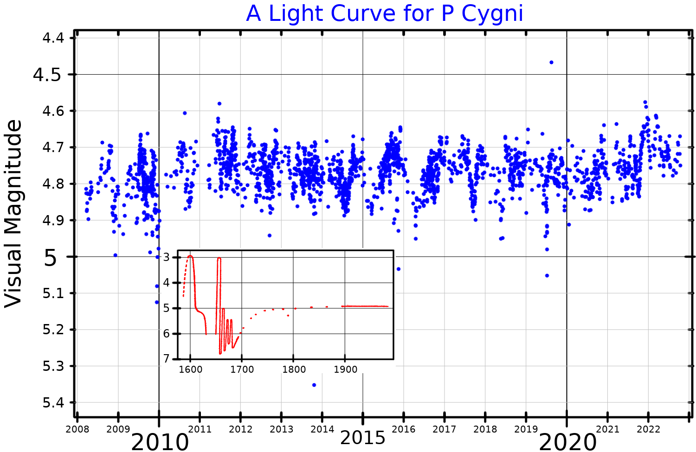

A P Cygni star is a luminous blue variable (LBV) hypergiant whose spectrum shows the distinctive P Cygni profile: a broad emission peak combined with a blueshifted absorption trough in the same spectral line, produced by a powerful, rapidly expanding stellar wind. The term takes its name from the prototype star P Cygni (also catalogued as 34 Cygni), located in the constellation Cygnus roughly 5,300 light-years from Earth.

Credit: PopePompus (CC BY-SA 4.0); AAVSO data; inset after de Groot 1988
{kind=link}
P Cygni itself is among the most luminous stars in the Milky Way, with a luminosity approximately 610,000 times that of the Sun, a mass of about 37 solar masses, and a surface temperature near 18,700 K. Its spectral type is B1–2 Ia-0ep, placing it at the boundary between B supergiants and hypergiants. With an apparent magnitude of roughly 4.8, it is just visible to the naked eye under dark skies, though its brightness has ranged between magnitude 3 and 6 over its recorded history. In 2021, interferometric observations confirmed that P Cygni has a companion: a B-type star about 4.3 magnitudes fainter, separated by 13.0 ± 0.1 milliarcseconds and orbiting on a period of approximately seven years.
The P Cygni profile arises from the geometry of the stellar wind. Gas flowing outward in all directions produces a broad emission component near the line's rest wavelength, as the wind re-emits radiation isotropically. Simultaneously, the column of wind material expanding directly toward the observer intercepts starlight and absorbs it at a shorter, blueshifted wavelength. The degree of blueshift in the absorption minimum gives a direct measure of the wind's terminal velocity; for hot supergiants this typically ranges from a few hundred to about 2,000 km/s. The profile is most prominent in hydrogen Balmer lines, particularly H-alpha, and in ultraviolet resonance lines of carbon, silicon, and nitrogen.
The wind of P Cygni is driven by radiation pressure acting on absorption lines of heavy elements — the same line-driven mechanism operating in all hot OB stars, but far stronger here due to the star's extreme luminosity. Past giant eruptions of P Cygni, estimated to have occurred roughly 20,000, 2,100, and 900 years ago, would have expelled large shells of material comparable to eruptions of Eta Carinae. When Dutch cartographer Willem Janszoon Blaeu first recorded the star on 18 August 1600, it had brightened suddenly to 3rd magnitude — an event now understood as a major LBV eruption. Johann Bayer catalogued it as ‘P’ in his 1603 Uranometria atlas, and the designation has persisted. By around 1715 the star had settled near 5th magnitude, where it has remained, with low-amplitude variability characteristic of a quiescent LBV.
Although the term ‘P Cygni star’ formally refers to P Cygni as an LBV, the P Cygni profile itself appears across a wide range of astrophysical contexts. Wolf-Rayet stars, classical novae during their expansion phase, supernova ejecta, and Be stars during outbursts all display it. In supernovae spectroscopy, P Cygni profiles in specific lines are used to measure ejecta expansion velocities and identify the composition of the ejected material. Inverse P Cygni profiles — where the absorption component is redshifted rather than blueshifted — indicate infalling rather than outflowing gas, and are seen in protostars and accreting systems.
See also: stellar wind, luminous blue variable, emission line, absorption line, Wolf-Rayet star, supernova.